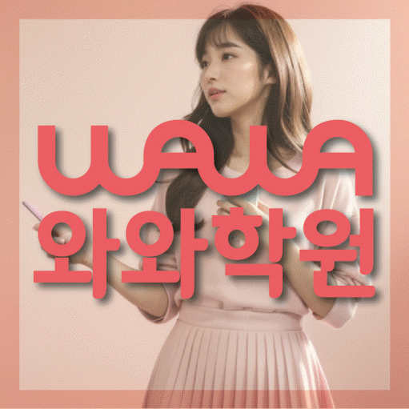

MIDDLE MATH
도남동 중등 수학학원
도남동 중등 수학학원에서 도형부터 개념을 다시 세우는 학습을 판단하는 자료와 개념 연결과 함수·그래프·도형 해석 확인 순서, 학교 시험 준비, 센터·학년 정보를 정리했습니다.
01 Quick answer
도남동 중등 수학: 도형부터 개념을 다시 세우는 학습
도남동에서 ‘도형부터 개념을 다시 세우는 학습’을 판단할 때는 점수보다 최근 수학 풀이를 먼저 봐야 합니다. 출발 자료: 식·그래프·표·도형 중 조건을 잘못 옮긴 위치와 그때 세운 식을 함께 남기세요. 바꿀 행동: 한 관계를 식과 그림으로 각각 나타내고 두 표현에서 같은 조건을 연결하세요. 일주일 뒤: 표현 방식이 바뀐 새 문제에서도 교점·범위·변화 방향을 스스로 설명하는지 확인하세요.
확인 기준
도남동 상담 메모에는 개념 연결의 첫 행동과 함수·그래프·도형 해석을 다시 확인할 날짜를 적고 이용 조건은 별도 줄로 나눕니다.


 010-6839-8283
010-6839-8283학습 답변 요약
핵심 주제는 ‘도형부터 개념을 다시 세우는 학습’입니다. 개념 연결과 함수·그래프·도형 해석의 출발 상태를 확인하고 오답 원인·재풀이와 내신 범위·학교별 출제 유형의 실행 기록과 학교·센터 사실을 분리해 살펴봅니다.
도남동 중등 수학 진단: 도형부터 개념을 다시 세우는 학습
도남동 중등 수학을 비교할 때는 ‘도형부터 개념을 다시 세우는 학습’부터 구체화합니다. 첫 질문은 ‘공식의 이름은 알지만 적용 조건과 개념 사이의 관계를 자기 말로 설명하지 못하는지’이며, 답은 최근 시험지의 풀이 흔적에서 확인합니다.
두 번째 질문은 ‘식·그래프·표·도형이 같은 관계를 나타낸다는 점을 연결해 읽지 못하는지’이며 한 영역에서만 막혔다면 그 부분부터 보완하고, 둘 다 어렵다면 개념 연결에서 막힌 이유를 먼저 설명한 뒤 함수·그래프·도형 해석을 재확인하세요. 일주일 뒤에는 ‘도형부터 개념을 다시 세우는 학습’에 해당하는 새 문제도 혼자 시작하는지 다시 확인합니다.
개념 연결과 함수·그래프 해석의 풀이 기록을 비교하는 방법
시험지나 학습표에서 ‘개념 설명 메모와 대표 문제에서 해당 공식을 선택한 이유’를 표시한 뒤 ‘문제의 조건을 옮겨 그린 그림과 좌표·교점·범위를 잘못 표시한 위치’와 비교하고 자료 위치·날짜·수정 이유를 남겨 우연한 실수인지 반복되는 문제인지 확인하세요.
다음 점검에서는 숫자와 조건이 바뀐 새 문제를 사용하고 ‘풀이를 보지 않고 개념의 적용 조건과 사용 이유를 설명하는지’와 ‘표현 방식이 바뀐 문제에서도 그래프의 변화와 식의 조건을 연결하는지’에 같은 기준으로 답하는지 봅니다. 첫 기록과 비교하면 학습 방향의 변화를 확인하기 쉽습니다.
개념 연결과 함수·그래프 해석의 내신 일정과 재확인일을 나누는 기준
내신 기록에는 범위·개념·유형·서술형을, 누적 유형 문제 기록에는 유형·근거·소요 시간을 적습니다. 두 기록 모두 ‘내신 범위의 필수 개념과 누적 유형 문제에서 다시 등장한 선수 개념을 구분해 연결하는 기준’과 ‘내신의 단원별 그래프 문제와 누적 유형 문제의 여러 개념이 섞인 시각 자료를 구분하는 기준’ 중 실제 자료에 맞는 기준을 고르세요.
주간 계획에는 개념 연결과 함수·그래프·도형 해석의 최소 행동을 각각 한 줄로 남깁니다. 시험 뒤에는 점수보다 근거·시간·독립 수행 기록의 변화를 비교하세요.
내신 마감일을 적은 뒤 ‘도형부터 개념을 다시 세우는 학습’과 관련된 개념 연결 점검일, 함수·그래프·도형 해석 재확인일을 차례로 배치하세요. 이후 학생이 개념 연결과 함수·그래프·도형 해석의 판단 과정을 각각 설명하게 하고 근거가 불분명한 쪽만 다시 계획합니다.
도남동 센터 이용 조건과 개념 연결 학습 질문을 따로 적는 방법
상담 준비용 학교명은 학남중·강북중 등으로 정리돼 있으나, 이 명칭은 참고용이므로 재학 학교의 범위와 개설 여부를 별도로 물어야 합니다.
수학 가능 학년 항목에서 중1·중2·중3 표기를 확인할 수 있어 오답 원인·재풀이와 내신 범위·학교별 출제 유형 관련 반 구성과 현재 시간표는 별도 확인 항목입니다. 페이지가 안내하는 센터명은 와와학습코칭센터 대구도남점, 제공 주소는 대구 북구 도남중앙로7길 20-3 위너프라자 402호 와와학습코칭학원입니다. 와와학습코칭센터 대구도남점 등록 조건을 확인할 때는 교습비 자료와 실제 시간표를 대조하고 방문 동선을 따로 살핍니다.
첫 풀이와 새 문제 확인을 연결하는 개념 연결 7일 계획
7일 계획의 출발점은 ‘개념 설명 메모와 대표 문제에서 해당 공식을 선택한 이유’입니다. 첫 행동을 ‘정의·조건·대표식을 한 줄씩 연결한 뒤 조건이 바뀐 문제에 같은 개념을 적용하기’로 정하고 시작일·완료일·남은 질문을 한 줄씩 적으세요.
7일 뒤에는 ‘풀이를 보지 않고 개념의 적용 조건과 사용 이유를 설명하는지’를 다시 묻습니다. 학생이 혼자 답하면 ‘주어진 관계를 식과 그림으로 각각 나타내고 두 표현에서 같은 조건을 가리키기’로 넘어가고, 어렵다면 첫 행동을 더 작은 분량으로 반복하세요. ‘도형부터 개념을 다시 세우는 학습’의 첫 행동은 한 관계를 식과 그림으로 각각 나타내고 두 표현에서 같은 조건을 연결하세요. 다음 판단에서는 표현 방식이 바뀐 새 문제에서도 교점·범위·변화 방향을 스스로 설명하는지 확인하세요.
상담에서 개념 연결과 함수·그래프 해석을 확인하는 순서
상담 전 ‘도형부터 개념을 다시 세우는 학습’을 설명할 최근 수학 자료와 가능한 가정 학습 시간을 적어 두세요. ‘공식 암기와 개념 이해를 어떤 질문과 풀이 기록으로 나누어 확인하는지’와 ‘그림을 대신 그려 주기보다 학생이 조건을 시각화하는 과정을 어떻게 확인하는지’를 분리해 질문합니다.
답변은 개념 연결의 첫 행동과 함수·그래프·도형 해석을 다시 확인할 날짜로 바꿔 적으세요. 주소·학년·시간표·교습비는 학습 질문과 다른 줄에 남깁니다.
- 학생 자료개념 설명 메모와 대표 문제에서 해당 공식을 선택한 이유
- 시험 계획학교 범위표와 함수·그래프·도형 해석 연습 완료일·재확인일
- 재확인오답 원인·재풀이 확인 날짜와 학생 설명 기록
- 이용 조건수학 가능 학년(중1·중2·중3)·시간표·교습비·통학 동선
02 Parent perspective
도남동 중등 수학 학부모 상담 상황
아래 도남동 중등 수학 상담 장면은 실제 이용 후기나 특정 학생의 성과가 아닌 준비용 가상 예시입니다. 학습 결과는 학생의 출발점과 실천 정도에 따라 달라질 수 있습니다.
도남동 학생이 새 교재를 시작하기 전 상담하는 가상 장면입니다. ‘도형부터 개념을 다시 세우는 학습’에 필요한 개념 연결 자료를 보여 주고 함수·그래프·도형 해석을 언제 다시 볼지 질문합니다.
도남동 상담 뒤 등록 여부를 비교하는 가상 장면입니다. 학부모는 수학 가능 학년(중1·중2·중3)·교습비·시간표를 사실 항목으로 적고 오답 원인·재풀이를 다시 확인할 날짜는 학습 계획에 따로 남깁니다.
03 FAQ
도남동 중등 수학 자주 묻는 질문
학생 자료, 가능 학년과 실제 이용 조건을 나누어 답했습니다.
도남동 중등 수학에서 ‘도형부터 개념을 다시 세우는 학습’은 어떤 자료부터 확인하나요?
첫 확인 자료는 ‘개념 설명 메모와 대표 문제에서 해당 공식을 선택한 이유’입니다. 학생이 ‘풀이를 보지 않고 개념의 적용 조건과 사용 이유를 설명하는지’에 직접 답하게 한 뒤 이번 주에는 ‘정의·조건·대표식을 한 줄씩 연결한 뒤 조건이 바뀐 문제에 같은 개념을 적용하기’만 실행해 보세요.
개념 연결과 함수·그래프·도형 해석 진단 기록은 어떻게 나누나요?
한 표 안에서도 개념 연결과 함수·그래프·도형 해석의 확인 근거와 다음 행동을 각각 다른 열에 적습니다. 같은 날짜 기록끼리 비교하면 원인이 선명해집니다.
학교 시험과 누적 유형 문제에서 개념 연결과 함수·그래프·도형 해석 비중은 어떻게 나누나요?
내신은 개념 연결에 필요한 범위 자료와 마감일을, 누적 유형 문제는 함수·그래프·도형 해석에 필요한 새 문제와 재확인일을 중심으로 기록합니다. 두 기록 모두 ‘내신 범위의 필수 개념과 누적 유형 문제에서 다시 등장한 선수 개념을 구분해 연결하는 기준’과 ‘내신의 단원별 그래프 문제와 누적 유형 문제의 여러 개념이 섞인 시각 자료를 구분하는 기준’을 확인 기준으로 사용하세요.
상담 전 오답 원인·재풀이와 내신 범위·학교별 출제 유형을 확인하려면 어떤 자료를 가져가나요?
상담 자료는 오답 원인·재풀이와 내신 범위·학교별 출제 유형의 수행 흔적이 보이는 교재와 주간 계획표면 충분합니다. ‘오답 기록의 분량보다 원인 분류와 새 문제 재확인을 어떻게 연결하는지’도 메모해 가세요.
도남동 중등 수학 상담에서 가능 학년과 참고 학교는 어떻게 확인하나요?
도남동 페이지의 제공 자료 기준 수학 가능 학년은 중1·중2·중3입니다. 이 표기와 현재 시간표가 일치하는지 상담에서 확인하세요. 학남중·강북중 등은 상담 질문을 준비하기 위한 학교명입니다. 실제 재학 학교의 시험 자료를 보여 주고 현재 개설 범위에 맞는지 직접 확인하세요.
04 Related
도남동 관련 학원·상담 페이지
같은 지역의 과목 조합과 학년 카테고리, 앞뒤 지역 안내를 함께 확인하세요.